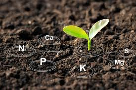

The Importance of Soil Health in Farming
Learn about the crucial role of soil health in
sustainable farming practices and how to improve it.
Soil health is essential for nutrient availability,
water retention, and overall plant growth. By
implementing proper soil management techniques,
farmers can enhance soil fertility, reduce erosion,
and promote long-term sustainability.

Denis Peterson
 iFoodSOS
iFoodSOS